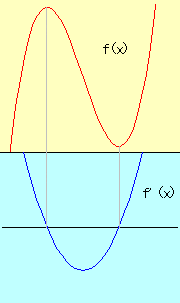
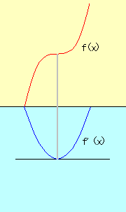
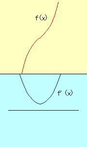

|
f(x) is a cubic function. Then f'(x) is quadratic function. There are three cases about the discriminant of f'(x). Let f'(x) = ax2+bx+c, discriminant = b2-4ac. (Figure 1) The discriminant is positive( not zero). (Figure 2) The discriminant is positive( = zero). (Figure 3) The discriminant is negative.
| ||
| Figure 1  |
Figure 2  |
Figure 3  |